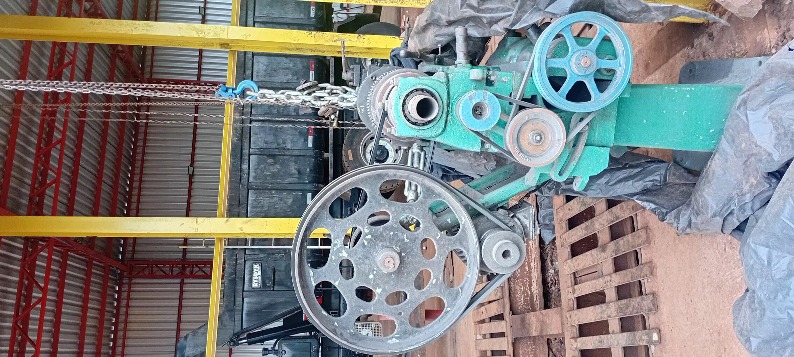
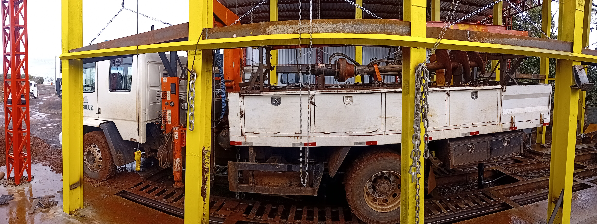
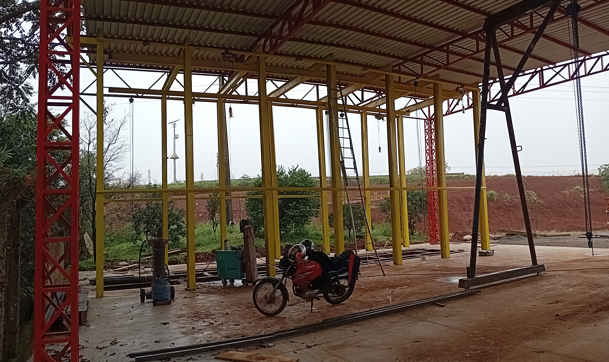
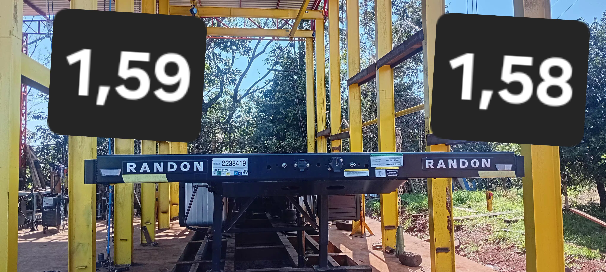
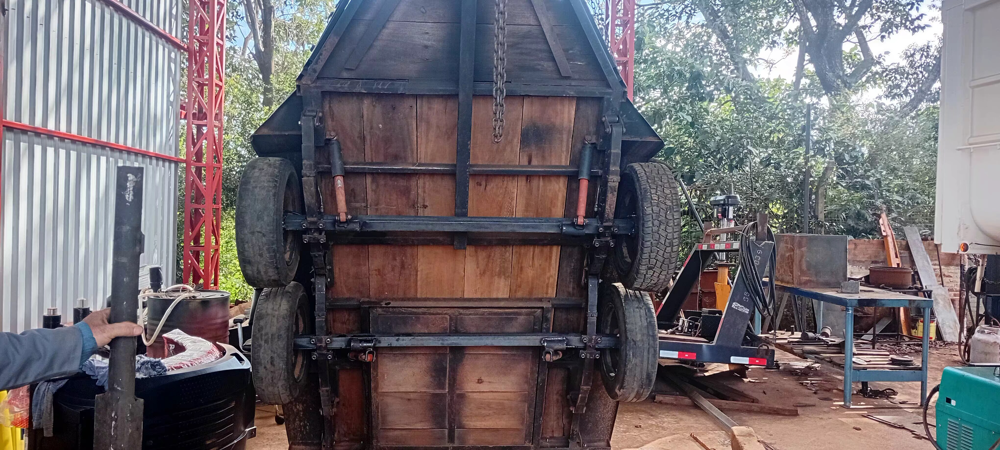
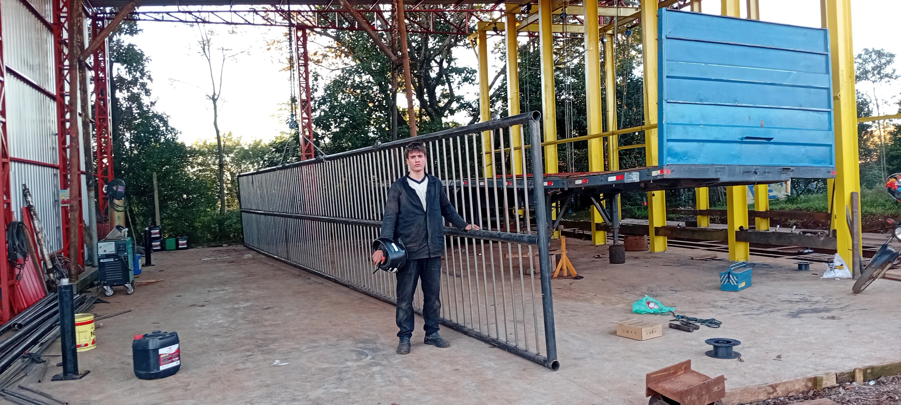

01
Torno mecânico
Usinagem e recuperação de componentes conforme a necessidade de cada serviço.
Serviços para caminhões, carretas e implementos. Torno mecânico, gaiolas, recuperação e soluções para quem trabalha pesado.
Atendimento em Ijuí-RS para demandas de caminhões, carretas e estruturas da linha pesada. Conheça algumas das frentes de trabalho da Lemar Molas.
Usinagem e recuperação de componentes conforme a necessidade de cada serviço.
Serviços em gaiolas, estruturas metálicas e componentes para linha pesada.
Trabalho de alinhamento e recuperação estrutural em veículos pesados.
Serviços e manutenção em veículos e implementos rodoviários.
Soldagem e reforços em aço e outros materiais compatíveis. Não realizamos solda em alumínio.
Serviços relacionados a molas e suspensão de veículos pesados.
O torno mecânico e a fabricação/recuperação de gaiolas merecem lugar de destaque na apresentação da Lemar Molas. São serviços que mostram versatilidade e capacidade de resolver demandas específicas da linha pesada.
Esta página será atualizada com fotos e vídeos reais dos trabalhos, para que cada serviço apresentado corresponda ao que a oficina realmente executa.
Ver fotos da oficina
Fotografias reais selecionadas do material da oficina. Em breve: pares de antes e depois e vídeos dos serviços.





A Lemar Molas atende demandas de serviços pesados com foco em soluções práticas para caminhões, carretas e componentes mecânicos. Entre em contato para conversar sobre seu serviço e solicitar uma avaliação.
Fale com a Lemar Molas, em Ijuí-RS, e explique o que você precisa. Vamos avaliar a melhor forma de atender.
Contato em configuração